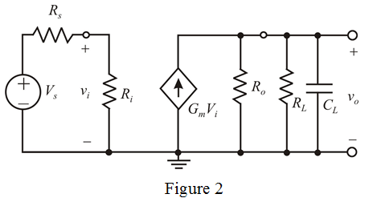
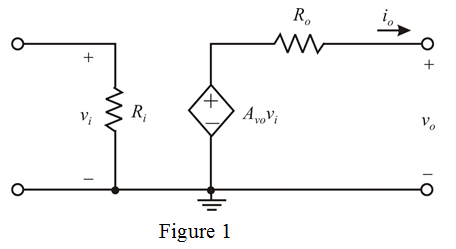
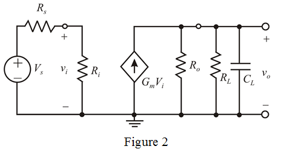

From Figure 1, the amplifier circuit fed with a voltage source  having a source resistance
having a source resistance ; its output is connected to a load consisting of a resistance
; its output is connected to a load consisting of a resistance  in parallel with a capacitance
in parallel with a capacitance .
.
Re-draw the circuit diagram.

Refer to Table 1.1 in the textbook.
Consider the voltage amplifier circuit.

From Figure 1, the amplifier circuit fed with a voltage source having a source resistance; its output is connected to a load consisting of a resistance in parallel with a capacitance.
Re-draw the circuit diagram.

From Figure 2, apply voltage division rule and determine the input voltage.
…… (1)
(a)
Consider  of the input signal is lost in coupling the signal source to the amplifier.
of the input signal is lost in coupling the signal source to the amplifier.
…… (2)
Equate equation (1) and equation (2).
…… (3)
Simplify the equation further.

Therefore, the constraint is …… (4)
(b)
From Figure 2, consider the 3-dB frequency of the parallel RC circuit at the output.
This 3-dB frequency is greater than or equal to the specified value .
Thus,
Therefore, the constraint is,
 …… (5)
…… (5)
(c)
Write the dc gain of the amplifier.
This gain is equal or greater than specified value  .
.
From equation (3), substitute for  in the equation.
in the equation.
Therefore, the constraint is,
. …… (6)
From equation (4), determine the input resistance.
Substitute  for
for  and
and  for
for  in the equation.
in the equation.
Therefore, the input resistance,  is.
is.
Therefore, the output resistance is .
.
From equation (6), determine the trans-conductance.
Therefore, the trans-conductance is.